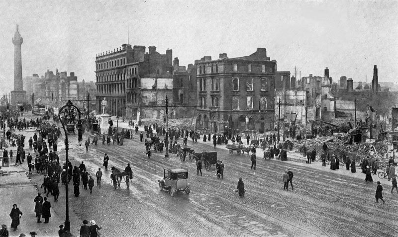
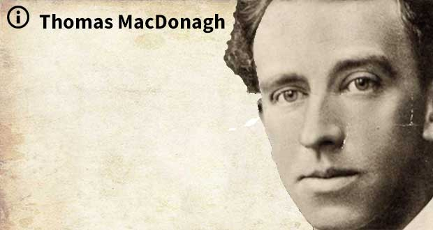

The Players

James Connolly
Connolly was born to Irish parents in the slums of Edinburgh in 1868. After leaving school at 11, he enlisted in the British Army at 14, giving a false name and age like his brother before him. After nearly seven years of service, he came disillusioned and deserted. Back in Edinburgh, he became involved with the Scottish Socialist Federation and, in 1895, moved with his young family to Dublin to take up the position of full-time secretary for the Dublin Socialist Club. Economic hardship drove him to America for a while, where he still kept involved with the socialist cause. On his return to Dublin in 1910, he became involved with Jim Larkin and the Irish Transport and General Workers Union. Following the Lockout of 1913, he co-founded the Irish Citizen Army with the aim of defending workers and stikers from the Dublin Metropolitan Police. |

Patrick Pearse

In the week before the Rising, the council of the IRB presented MacNeill with a letter, allegedly stolen from high-ranking British staff in Dublin Castle, indicating that his arrest, and that of all the other nationalist leaders, was imminent. The letter, called the Castle Document, was, however, a forgery. When MacNeill learned about the IRB's rising plans, and when he was informed that Roger Casement was about to land in County Kerry with a shipment of German arms, he was reluctantly persuaded to go along with them, believing British action was now imminent and mobilisation of the Volunteers would, at this stage, be a defensive act.However, on learning of the arrest of Casement, and the loss of the promised German arms, MacNeill countermanded the order for the Rising. He asked men he trusted to deliver the order to as many commanders as possible. He himself brought a longer version of the note to the Sunday Independent newspaper, where it was inserted as an advertisement. Helena Moloney was at Liberty Hall, the headquarters of the Citizen Army, on Easter Sunday morning: MacNeill’s prevarication over whether or not to go ahead with the rebellion, combined with the late notice, meant that the message caused confusion among rebels, especially in areas furthest from Dublin, severely reducing the number of volunteers who reported for duty on the day. Members of the Irish Republican Brotherhood delayed the Dublin rebellion by 24 hours. Thanks to MacNeill's countermand, only a small percentage of approximately 10,000 volunteers took part in the actual rising. The number of Brisith soldiers in Ireland at the time was low thanks to the first world war, so the extra volunteers would have no doubt made a huge difference to the events of the week ahead. |

Thomas MacDonaghIn the early hours between the 24th and 25th of April 1914, almost 25,000 rifles and somewhere between 3 and 5 million rounds of amunition was successfully landed at Larne, Donaghadee and Bangor, a smuggling operation, although authorities were aware of it but turned a blind eye, to equip the Ulster Volunteer Force, who had been founded in 1912 to block any attempt by the British Government to impose domestic self-government, Home Rule, in Ireland. ******** the Irish Volunteers organised the landing of 900 Mauser rifles at Howth on the 26th of July, 1914. As this took place during the day, it attracted a fair bit of attention and the harbour master informed the Dublin Metropolitan Police, who appealed for Military assistance. They were joined at Clontarf by a detachment of the King's Own Scottish Borderers, who had been sent from the Royal Barracks (now Collins Barracks). Volunteers fought both the pokice and the military and in the resulting confusion Thomas MacDonagh and Bulmer Hobson were able to guide volunteers to hide the guns in the grounds of the nearby Christian Brothers' school. The police did seize 19 weapons but had to return them later when a court ruled that their seizure had been illegal. PARAGRAPH2In the early hours between the 24th and 25th of April 1914, almost 25,000 rifles and somewhere between 3 and 5 million rounds of amunition was successfully landed at Larne, Donaghadee and Bangor, a smuggling operation, although authorities were aware of it but turned a blind eye, to equip the Ulster Volunteer Force, who had been founded in 1912 to block any attempt by the British Government to impose domestic self-government, Home Rule, in Ireland. ******** the Irish Volunteers organised the landing of 900 Mauser rifles at Howth on the 26th of July, 1914. As this took place during the day, it attracted a fair bit of attention and the harbour master informed the Dublin Metropolitan Police, who appealed for Military assistance. They were joined at Clontarf by a detachment of the King's Own Scottish Borderers, who had been sent from the Royal Barracks (now Collins Barracks). Volunteers fought both the pokice and the military and in the resulting confusion Thomas MacDonagh and Bulmer Hobson were able to guide volunteers to hide the guns in the grounds of the nearby Christian Brothers' school. The police did seize 19 weapons but had to return them later when a court ruled that their seizure had been illegal. |
Thomas J. ClarkeIn the early hours between the 24th and 25th of April 1914, almost 25,000 rifles and somewhere between 3 and 5 million rounds of amunition was successfully landed at Larne, Donaghadee and Bangor, a smuggling operation, although authorities were aware of it but turned a blind eye, to equip the Ulster Volunteer Force, who had been founded in 1912 to block any attempt by the British Government to impose domestic self-government, Home Rule, in Ireland. ******** the Irish Volunteers organised the landing of 900 Mauser rifles at Howth on the 26th of July, 1914. As this took place during the day, it attracted a fair bit of attention and the harbour master informed the Dublin Metropolitan Police, who appealed for Military assistance. They were joined at Clontarf by a detachment of the King's Own Scottish Borderers, who had been sent from the Royal Barracks (now Collins Barracks). Volunteers fought both the pokice and the military and in the resulting confusion Thomas MacDonagh and Bulmer Hobson were able to guide volunteers to hide the guns in the grounds of the nearby Christian Brothers' school. The police did seize 19 weapons but had to return them later when a court ruled that their seizure had been illegal. PARAGRAPH2In the early hours between the 24th and 25th of April 1914, almost 25,000 rifles and somewhere between 3 and 5 million rounds of amunition was successfully landed at Larne, Donaghadee and Bangor, a smuggling operation, although authorities were aware of it but turned a blind eye, to equip the Ulster Volunteer Force, who had been founded in 1912 to block any attempt by the British Government to impose domestic self-government, Home Rule, in Ireland. ******** the Irish Volunteers organised the landing of 900 Mauser rifles at Howth on the 26th of July, 1914. As this took place during the day, it attracted a fair bit of attention and the harbour master informed the Dublin Metropolitan Police, who appealed for Military assistance. They were joined at Clontarf by a detachment of the King's Own Scottish Borderers, who had been sent from the Royal Barracks (now Collins Barracks). Volunteers fought both the pokice and the military and in the resulting confusion Thomas MacDonagh and Bulmer Hobson were able to guide volunteers to hide the guns in the grounds of the nearby Christian Brothers' school. The police did seize 19 weapons but had to return them later when a court ruled that their seizure had been illegal. |

Eoin MacNeill's CountermandIn the week before the Rising, the council of the IRB presented MacNeill with a letter, allegedly stolen from high-ranking British staff in Dublin Castle, indicating that his arrest, and that of all the other nationalist leaders, was imminent. The letter, called the Castle Document, was, however, a forgery. When MacNeill learned about the IRB's rising plans, and when he was informed that Roger Casement was about to land in County Kerry with a shipment of German arms, he was reluctantly persuaded to go along with them, believing British action was now imminent and mobilisation of the Volunteers would, at this stage, be a defensive act.However, on learning of the arrest of Casement, and the loss of the promised German arms, MacNeill countermanded the order for the Rising. He asked men he trusted to deliver the order to as many commanders as possible. He himself brought a longer version of the note to the Sunday Independent newspaper, where it was inserted as an advertisement. Helena Moloney was at Liberty Hall, the headquarters of the Citizen Army, on Easter Sunday morning: MacNeill’s prevarication over whether or not to go ahead with the rebellion, combined with the late notice, meant that the message caused confusion among rebels, especially in areas furthest from Dublin, severely reducing the number of volunteers who reported for duty on the day. Members of the Irish Republican Brotherhood delayed the Dublin rebellion by 24 hours. Thanks to MacNeill's countermand, only a small percentage of approximately 10,000 volunteers took part in the actual rising. The number of Brisith soldiers in Ireland at the time was low thanks to the first world war, so the extra volunteers would have no doubt made a huge difference to the events of the week ahead. |

Howth & Bachelor's WalkIn the early hours between the 24th and 25th of April 1914, almost 25,000 rifles and somewhere between 3 and 5 million rounds of amunition was successfully landed at Larne, Donaghadee and Bangor, a smuggling operation, although authorities were aware of it but turned a blind eye, to equip the Ulster Volunteer Force, who had been founded in 1912 to block any attempt by the British Government to impose domestic self-government, Home Rule, in Ireland. ******** the Irish Volunteers organised the landing of 900 Mauser rifles at Howth on the 26th of July, 1914. As this took place during the day, it attracted a fair bit of attention and the harbour master informed the Dublin Metropolitan Police, who appealed for Military assistance. They were joined at Clontarf by a detachment of the King's Own Scottish Borderers, who had been sent from the Royal Barracks (now Collins Barracks). Volunteers fought both the pokice and the military and in the resulting confusion Thomas MacDonagh and Bulmer Hobson were able to guide volunteers to hide the guns in the grounds of the nearby Christian Brothers' school. The police did seize 19 weapons but had to return them later when a court ruled that their seizure had been illegal. PARAGRAPH2In the early hours between the 24th and 25th of April 1914, almost 25,000 rifles and somewhere between 3 and 5 million rounds of amunition was successfully landed at Larne, Donaghadee and Bangor, a smuggling operation, although authorities were aware of it but turned a blind eye, to equip the Ulster Volunteer Force, who had been founded in 1912 to block any attempt by the British Government to impose domestic self-government, Home Rule, in Ireland. ******** the Irish Volunteers organised the landing of 900 Mauser rifles at Howth on the 26th of July, 1914. As this took place during the day, it attracted a fair bit of attention and the harbour master informed the Dublin Metropolitan Police, who appealed for Military assistance. They were joined at Clontarf by a detachment of the King's Own Scottish Borderers, who had been sent from the Royal Barracks (now Collins Barracks). Volunteers fought both the pokice and the military and in the resulting confusion Thomas MacDonagh and Bulmer Hobson were able to guide volunteers to hide the guns in the grounds of the nearby Christian Brothers' school. The police did seize 19 weapons but had to return them later when a court ruled that their seizure had been illegal. |